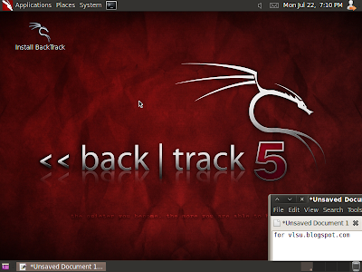
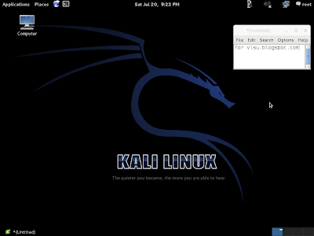
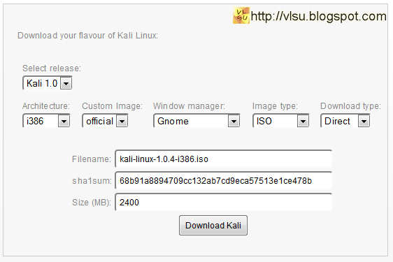
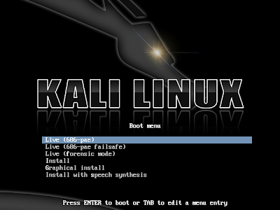
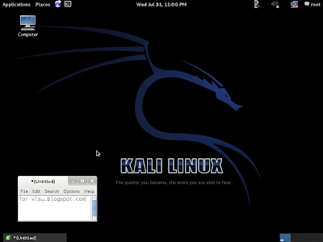
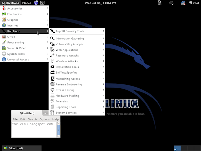
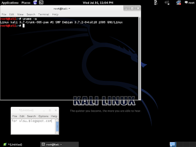

Kali Linux - первый взгляд
Vlsu обзор, первый_взгляд, debian, kali, linux 14 комментариев
Серия статей "первый взгляд" продолжается. От миниатюрных дистрибутивов переходим к операционным системам "особого назначения". Сегодня речь пойдёт о Kali Linux.
Что такое Kali Linux
Вполне возможно, что ранее Вы ничего не слышали о Kali Linux. Надеюсь, я сумел заинтриговать Вас опубликованной выше фразой "особого назначения". Теперь пришло время расставить все точки над "i".
Проект существует давно и имеет довольно запутанную историю, которая гласит о слиянии нескольких дистрибутивов.
Первый изначально имел название Whoppix (White Hat + Knoppix) и базировался на Knoppix. Затем произошла миграция на SLAX и имя изменилось на WHAX (White Hat + SLAX). Автор - Мати Ахарони. Главное в системе - тесты на проникновение.
Второй назывался Auditor Security Collection и был основан на Knoppix. Автор - Макс Мозер. Главное в системе - тесты на проникновение.
Схожие цели привели к объединению в один дистрибутив, имя которому Backtrack. И 26 мая 2006 года вышел первый релиз новой системы. С тех пор прошло семь лет и Backtrack стал одним из самых популярных "хакерских чемоданчиков". Он известен не только линуксоидам, но и многим пользователям Windows и Mac OS X. Сложно найти лучший инструмент для комплексного аудита безопасности.
А 13 марта 2013 года вместо релиза Backtrack 6 был представлен Kali Linux со следующим комментарием:
Seven years of developing BackTrack Linux has taught us a significant amount about what we, and the security community, think a penetration testing distribution should look like. We’ve taken all of this knowledge and experience and implemented it in our “next generation” penetration testing distribution.
After a year of silent development, we are incredibly proud to announce the release and public availability of “Kali Linux“, the most advanced, robust, and stable penetration testing distribution to date.
Kali is a more mature, secure, and enterprise-ready version of BackTrack Linux. Trying to list all the new features and possibilities that are now available in Kali would be an impossible task on this single page. We therefore invite you to visit our new Kali Linux Website and Kali Linux Documentation site to experience the goodness of Kali for yourself.
We are extremely excited about the future of the distribution and we can’t wait to see what the BackTrack community will do with Kali. Sign up in the new Kali Forums and join us in IRC in #kali-linux on irc.freenode.net and help us usher in this new era.
Вот краткий пересказ этого комментария. За семь лет разработки Backtrack стал таким, каким и должна быть система с тестами на проникновение. Полученные опыт и знания реализованы в дистрибутиве "нового поколения". После года разработки создатели гордятся релизом Kali Linux - самой передовой, надёжной и стабильной системы с тестами на проникновение на сегодняшний день. Kali - это более зрелая, безопасная и готовая к корпоративному использованию версия Backtrack. Всех изменений на одной странице не написать, поэтому предлагается посетить официальный сайт kali.org. Далее разработчики высказывают своё возбуждение по поводу будущего Kali Linux и сообщества Backtrack.
Отличия от Backtrack
Может показаться, что отличия между Backtrack и Kali Linux незначительны. Но это не так.
|
 |
|
Backtrack 5 |
|
 |
|
Kali Linux 1.0 |
Был совершён долгожданный переход с Ubuntu на Debian GNU/Linux. И это вовсе не означает, что используемый софт будет заведомо устаревшим. Репозиторий Kali четыре раза в день синхронизируется с дебиановским для предоставления самых новых версий программ из тестируемых веток.
В версии Kali 1.0 используется ядро Linux 3.7.2 с кучей патчей поддержки инъекции пакетов для многих типов беспроводных адаптеров. Добавлены драйвера беспроводных устройств, а также средства акселерации подбора паролей и WPA-ключей с помощью технологий Nvidia CUDA и ATI Stream.
Весь инструментарий для тестирования безопасности был обновлён до актуальных версий. Из состава исключены 50 программ (дублирующие друг друга и проблемные компоненты). Им на смену пришли более продвинутые альтернативы. Например, iKat - приложение для взлома инфокиосков, терминалов, WebTV.
Процесс добавления софта тоже изменился. Теперь за каждый пакет происходит голосование, а уже затем он подписывается GPG-ключом. То есть процедура стала более прозрачной.
В меню был добавлен пункт "Top 10 Security Tools". Он включает в себя подборку из десяти самых популярных инструментов: aircrack-ng, burpsuite, hydra, john the ripper, maltego, metasploit framework, nmap, sqlmap, wireshark, zaproxy.
В иерархии файловой системы изменения более значительны. Больше нет директории /pentest - её состав перемещён в стандартные для linux-системы места (/bin, /etc, /lib, /usr...).
Увеличилось число доступных архитектур. Поддерживаются и ARM-процессоры, что делает возможным загрузку с мобильных устройств, хромбуков и сверхпопулярного Raspberry pi.
Архитектур стало больше, а окружений рабочего стола меньше. К сожалению, пропала версия с KDE на борту. И вместо среды GNOME2 доступна GNOME3 Classic. Но оставлена возможность кастомизации, так что можно собрать Kali с KDE, XFCE, LXDE, MATE или i3.
UPD: ностальгирующие по кедам "из коробки" могут воспользоваться сборкой от black_cat (http://www.kali-kde.com).
Разработчиками стали ребята из Offensive Security и Rapid7. Последние, кстати, являются авторами Metasploit. Они взяли на себя ответственность по обеспечению официальной технической поддержки использования Metasploit в Kali Linux.
Вот основной состав команды создателей Kali: Mati (muts) Aharoni, Devon (dookie) Kearns, Raphaël (buxy) Hertzog, Martin (purehate) Bos, Emanuele (crossbower) Acri. Обращаю внимание на то, что Мати Ахарони был автором Whoppix и координатором Backtrack, а Devon Kearns, Raphaël Hertzog, Martin Bos и Emanuele Acri являлись разработчиками Backtrack'а.
Подведём промежуточные итоги. Kali Linux - это не просто переименованный Backtrack, а новая, более чистая и отлаженная система. Кроме специального инструментария, нескольких разработчиков и дракона на рабочем столе общих черт почти нет.
Загрузка
Скачать дистрибутив можно на официальном сайте загрузки: http://www.kali.org/downloads/. Здесь предложено зарегистрироваться для получения новостей о системе. Если Вы не желаете регистрироваться, то нужно нажать на надпись "No thanks, just want to download!"
Затем откроется страница с выбором параметров образа:

Далее нажмите на кнопку "Download Kali".
Установка
Kali Linux не требует установки на жёсткий диск и может работать как LiveDVD или LiveUSB.
Для создания LiveDVD достаточно записать ISO-образ на оптический диск любым удобным способом. Создать LiveUSB сложнее, но вполне возможно. Для этого нужно воспользоваться специальным софтом, например, UNetBootIn.
Запуск
Для запуска достаточно выставить в BIOS'е компьютера загрузку с оптического диска или флеш-карты (в зависимости от того, что Вы создали ранее).
Среди опций доступны следующие:
Кстати, в отличии от Backtrack, Kali при выборе режима Live сразу грузится на рабочий стол, а не в консоль, поэтому не придётся тратить время на ввод startx.
По-умолчанию работа ведётся от имени суперпользователя. Его пароль toor.
Иерархия меню Kali Linux
Меню с инструментарием настолько велико, что нет никакого смысла делать кучу скриншотов с ним. Поэтому я решил перепечатать его пункты сюда. Возможно, этот список станет отличной "картой" по объёмному меню.
Большинство приложений консольные и имеют хорошую документацию. Для её вызова достаточно ввести в консоли man имя_приложения. Статья не резиновая, так что прокомментирую лишь наиболее популярные пункты.
Настоятельно рекомендую ознакомиться с пунктами меню. Ведь многие люди считают, что инструментарий состоит лишь из утилит для проникновения и взлома паролей. Но кроме этого есть декомпиляторы, средства для создания скринкастов, Android SDK и другой полезный софт.
Кроме того обратите внимание на наличие той или иной программы. Я, например, упустил из виду тот момент, когда были добавлены reaver и apktool.
Скриншоты
В этом месте должно быть 20-30 снимков экрана с процедурой загрузки, рабочим столом и главным меню. Но этого не будет. Огромная структура меню уже была представлена выше. Поэтому здесь всего лишь 4 скриншота:
|
 |
|
Выбор способов загрузки Kali Linux |
|
 |
|
Рабочий стол GNOME3 Session Fallback (GNOME Classic) |
|
 |
|
Меню с инструментарием Kali Linux |
|
 |
|
Версия ядра |
Заключение
Kali Linux - достойный наследник Backtrack. Это лучший дистрибутив для тестирования безопасности. Больше добавить нечего.
Теперь небольшое напутствие. Так было с Backtrack'ом, так будет и с Kali. Найдётся множество людей, желающих установить дистрибутив себе и стать великими "хакерами". Но так делать не надо.
Во-первых, Kali не нужно использовать в качестве основной системы. Лучшим вариантом является загрузка с LiveDVD или LiveUSB.
Во-вторых, для работы нужны знания и опыт работы в операционных системах семейства GNU/Linux.
В-третьих, дистрибутив нацелен на взлом с целью выявления проблем в защите и их исправления. Конечно, взломать Wi-Fi или сбросить пароль администратора в Windows не составит труда. Можно взломать компьютер как друга, так и врага. Но не забывайте об Уголовном Кодексе Российской Федерации:
Статья 272 УК РФ. Неправомерный доступ к компьютерной информации
1. Неправомерный доступ к охраняемой законом компьютерной информации, если это деяние повлекло уничтожение, блокирование, модификацию либо копирование компьютерной информации, -
наказывается штрафом в размере до двухсот тысяч рублей или в размере заработной платы или иного дохода осужденного за период до восемнадцати месяцев, либо исправительными работами на срок до одного года, либо ограничением свободы на срок до двух лет, либо принудительными работами на срок до двух лет, либо лишением свободы на тот же срок.
2. То же деяние, причинившее крупный ущерб или совершенное из корыстной заинтересованности, -
наказывается штрафом в размере от ста тысяч до трехсот тысяч рублей или в размере заработной платы или иного дохода осужденного за период от одного года до двух лет, либо исправительными работами на срок от одного года до двух лет, либо ограничением свободы на срок до четырех лет, либо принудительными работами на срок до четырех лет, либо арестом на срок до шести месяцев, либо лишением свободы на тот же срок.
3. Деяния, предусмотренные частями первой или второй настоящей статьи, совершенные группой лиц по предварительному сговору или организованной группой либо лицом с использованием своего служебного положения, -
наказываются штрафом в размере до пятисот тысяч рублей или в размере заработной платы или иного дохода осужденного за период до трех лет с лишением права занимать определенные должности или заниматься определенной деятельностью на срок до трех лет, либо ограничением свободы на срок до четырех лет, либо принудительными работами на срок до пяти лет, либо лишением свободы на тот же срок.
4. Деяния, предусмотренные частями первой, второй или третьей настоящей статьи, если они повлекли тяжкие последствия или создали угрозу их наступления, -
наказываются лишением свободы на срок до семи лет.
Примечания. 1. Под компьютерной информацией понимаются сведения (сообщения, данные), представленные в форме электрических сигналов, независимо от средств их хранения, обработки и передачи.
2. Крупным ущербом в статьях настоящей главы признается ущерб, сумма которого превышает один миллион рублей.
Статья 273 УК РФ. Создание, использование и распространение вредоносных компьютерных программ
1. Создание, распространение или использование компьютерных программ либо иной компьютерной информации, заведомо предназначенных для несанкционированного уничтожения, блокирования, модификации, копирования компьютерной информации или нейтрализации средств защиты компьютерной информации, -
наказываются ограничением свободы на срок до четырех лет, либо принудительными работами на срок до четырех лет, либо лишением свободы на тот же срок со штрафом в размере до двухсот тысяч рублей или в размере заработной платы или иного дохода осужденного за период до восемнадцати месяцев.
2. Деяния, предусмотренные частью первой настоящей статьи, совершенные группой лиц по предварительному сговору или организованной группой либо лицом с использованием своего служебного положения, а равно причинившие крупный ущерб или совершенные из корыстной заинтересованности, -
наказываются ограничением свободы на срок до четырех лет, либо принудительными работами на срок до пяти лет с лишением права занимать определенные должности или заниматься определенной деятельностью на срок до трех лет или без такового, либо лишением свободы на срок до пяти лет со штрафом в размере от ста тысяч до двухсот тысяч рублей или в размере заработной платы или иного дохода осужденного за период от двух до трех лет или без такового и с лишением права занимать определенные должности или заниматься определенной деятельностью на срок до трех лет или без такового.
3. Деяния, предусмотренные частями первой или второй настоящей статьи, если они повлекли тяжкие последствия или создали угрозу их наступления, -
наказываются лишением свободы на срок до семи лет.
Статья 274 УК РФ. Нарушение правил эксплуатации средств хранения, обработки или передачи компьютерной информации и информационно-телекоммуникационных сетей
1. Нарушение правил эксплуатации средств хранения, обработки или передачи охраняемой компьютерной информации либо информационно-телекоммуникационных сетей и оконечного оборудования, а также правил доступа к информационно-телекоммуникационным сетям, повлекшее уничтожение, блокирование, модификацию либо копирование компьютерной информации, причинившее крупный ущерб, -
наказывается штрафом в размере до пятисот тысяч рублей или в размере заработной платы или иного дохода осужденного за период до восемнадцати месяцев, либо исправительными работами на срок от шести месяцев до одного года, либо ограничением свободы на срок до двух лет, либо принудительными работами на срок до двух лет, либо лишением свободы на тот же срок.
2. Деяние, предусмотренное частью первой настоящей статьи, если оно повлекло тяжкие последствия или создало угрозу их наступления, -
наказывается принудительными работами на срок до пяти лет либо лишением свободы на тот же срок.
Статья 137 УК РФ. Нарушение неприкосновенности частной жизни
1. Незаконное собирание или распространение сведений о частной жизни лица, составляющих его личную или семейную тайну, без его согласия либо распространение этих сведений в публичном выступлении, публично демонстрирующемся произведении или средствах массовой информации -
наказываются штрафом в размере до двухсот тысяч рублей или в размере заработной платы или иного дохода осужденного за период до восемнадцати месяцев, либо обязательными работами на срок до трехсот шестидесяти часов, либо исправительными работами на срок до одного года, либо принудительными работами на срок до двух лет с лишением права занимать определенные должности или заниматься определенной деятельностью на срок до трех лет или без такового, либо арестом на срок до четырех месяцев, либо лишением свободы на срок до двух лет с лишением права занимать определенные должности или заниматься определенной деятельностью на срок до трех лет.
2. Те же деяния, совершенные лицом с использованием своего служебного положения, -
наказываются штрафом в размере от ста тысяч до трехсот тысяч рублей или в размере заработной платы или иного дохода осужденного за период от одного года до двух лет, либо лишением права занимать определенные должности или заниматься определенной деятельностью на срок от двух до пяти лет, либо принудительными работами на срок до четырех лет с лишением права занимать определенные должности или заниматься определенной деятельностью на срок до пяти лет или без такового, либо арестом на срок до шести месяцев, либо лишением свободы на срок до четырех лет с лишением права занимать определенные должности или заниматься определенной деятельностью на срок до пяти лет.
Статья 138 УК РФ. Нарушение тайны переписки, телефонных переговоров, почтовых, телеграфных или иных сообщений
1. Нарушение тайны переписки, телефонных переговоров, почтовых, телеграфных или иных сообщений граждан -
наказывается штрафом в размере до восьмидесяти тысяч рублей или в размере заработной платы или иного дохода осужденного за период до шести месяцев, либо обязательными работами на срок до трехсот шестидесяти часов, либо исправительными работами на срок до одного года.
2. То же деяние, совершенное лицом с использованием своего служебного положения, -
наказывается штрафом в размере от ста тысяч до трехсот тысяч рублей или в размере заработной платы или иного дохода осужденного за период от одного года до двух лет, либо лишением права занимать определенные должности или заниматься определенной деятельностью на срок от двух до пяти лет, либо обязательными работами на срок до четырехсот восьмидесяти часов, либо принудительными работами на срок до четырех лет, либо арестом на срок до четырех месяцев, либо лишением свободы на срок до четырех лет.
3. Незаконные производство, сбыт или приобретение в целях сбыта специальных технических средств, предназначенных для негласного получения информации, -
наказываются штрафом в размере до двухсот тысяч рублей или в размере заработной платы или иного дохода осужденного за период до восемнадцати месяцев, либо ограничением свободы на срок до трех лет, либо лишением свободы на срок до трех лет с лишением права занимать определенные должности или заниматься определенной деятельностью на срок до трех лет.
Поделитесь с друзьями и добавьте в закладки:
А при копировании материалов поставьте эту ссылку на оригинал